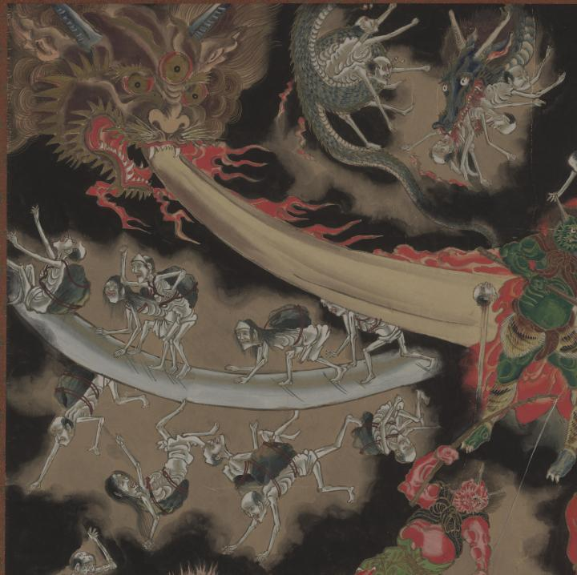

← 图鉴索引

亡者が石を背負い、細い道を登らされ、坂で滑り落ちている。
出典：親書誌：U426_nichibunken_0380：奈落の娑婆地獄絵図；ナラク ノ シラバ ジゴク エズ／日付：2014／資源識別子：U426_nichibunken_0380_0001_0005
Copyright (c)2010- International Research Center for Japanese Studies, Kyoto, Japan. All rights reserved.